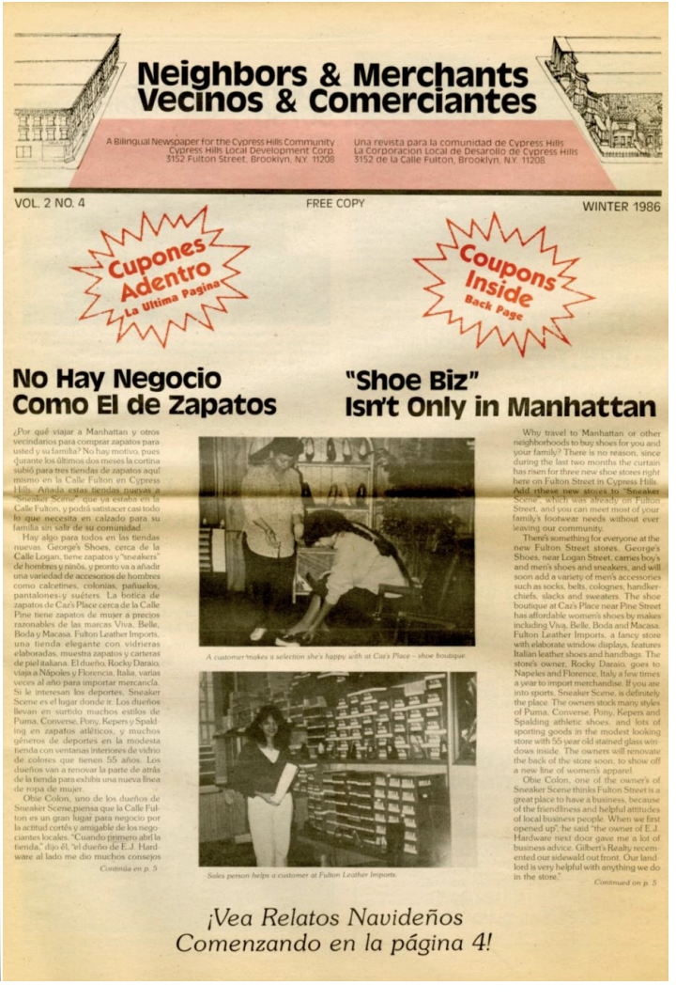

Cypress Hills was settled in the early 1700s as a part of New Lots of the town of Flatbush. At the beginning of the twentieth century, Cypress Hills was inhabited primarily by Americans of German, Irish, Italian, and Polish descent. This ethnic mix remained primarily the same until the middle of the twentieth century, when African Americans, Central Americans, and South Americans moved to Cypress Hills. Today, Haitian, Jamaican, Indian, Pakistani, Korean, and Chinese residents also call Cypress Hills home. A strong sense of community still remains.

This is my family's parish. Blessed Sacrament has remained unchanged over three generations. My mom was baptized and married here. My siblings and I received our sacraments here. This church continues to be a part of every family milestone.

This is my mom's high school, Lane, It is the "school that lays between Brooklyn and Queens" says my mom. My mom remembers how communities were built here despite its reputation for racial tensions. The building now has been split into smaller schools.